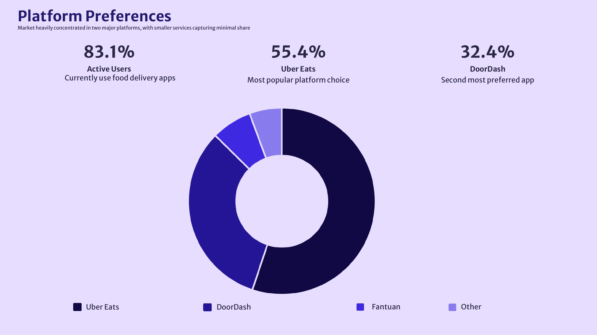
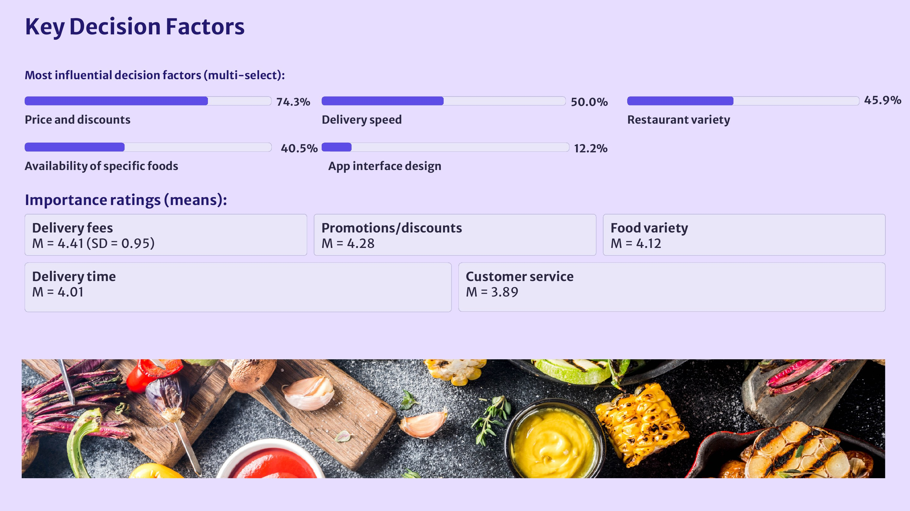

Food Delivery App Study
Researching how cost, culture and service shape U.S. college students’ platform choices.

What actually determines app preference?
The study examined how U.S. college students aged 18–25 choose among Uber Eats, DoorDash and smaller services, testing price, service quality, usability, social influence and cultural food access.

Turn everyday ordering into measurable behavior.
A Qualtrics survey combined platform choice, ordering frequency, Likert-scale importance ratings, barriers and open-ended experience questions, followed by descriptive and inferential analysis.
Cost dominates; culture still differentiates.
High prices were the clearest barrier, while Uber Eats and DoorDash concentrated most usage. Asian and international respondents also surfaced limited access to culturally familiar food as an important platform-level difference.

Design for student reality, not generic convenience.
Student pricing, lower fees, culturally relevant restaurant supply, better cuisine filters and campus referral systems offer more leverage than interface polish alone.
From thought
to touchpoint.
- Research design
- Qualtrics survey
- Descriptive analysis
- Chi-square analysis
- Platform recommendations
“Convenience earns trial, but affordability and cultural relevance decide whether convenience becomes a habit.”